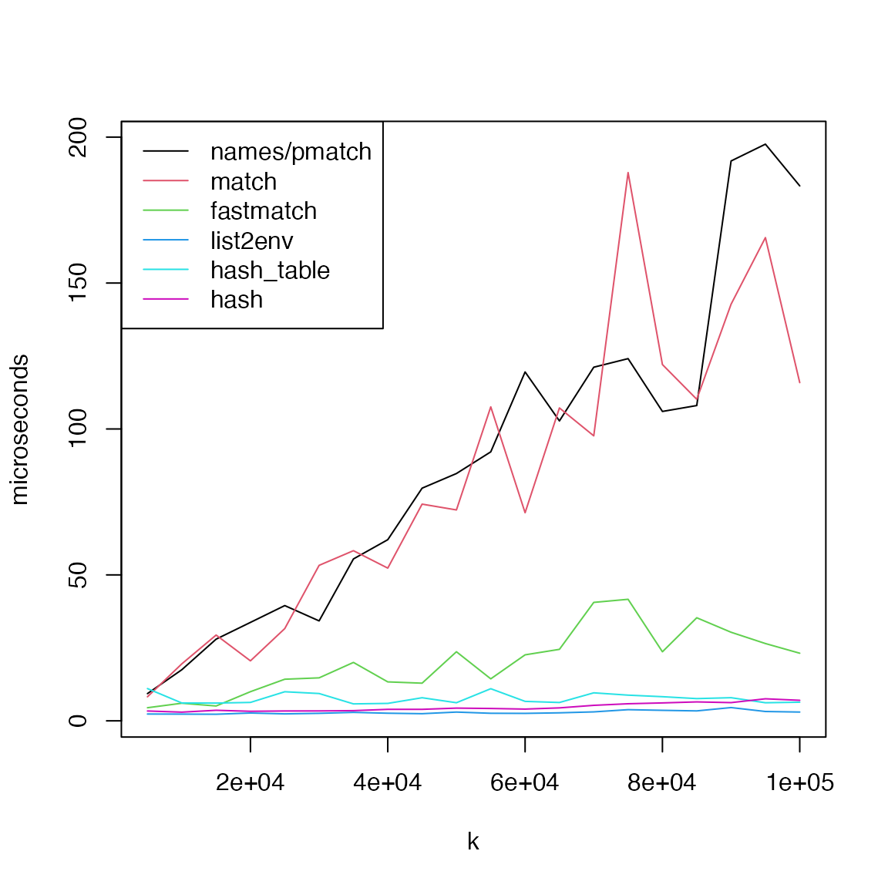
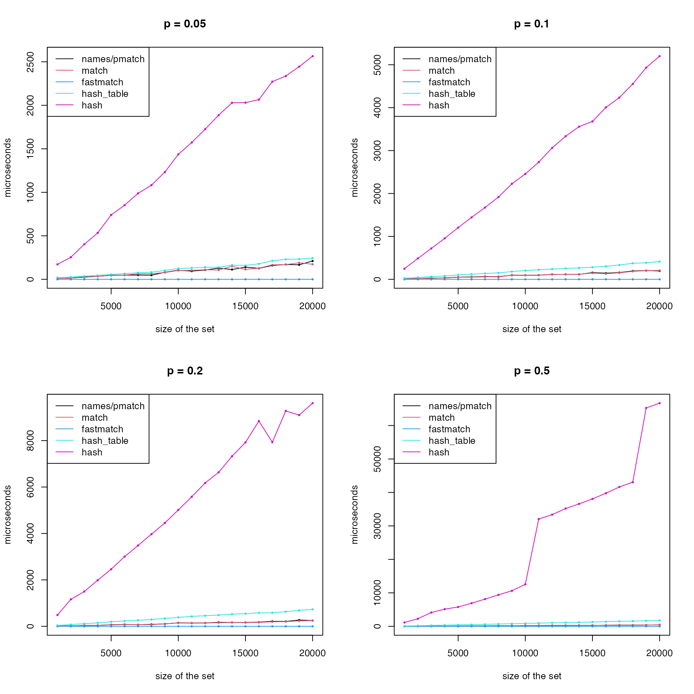

Benchmark on Hash Tables and Hash Sets
Zuguang Gu ( z.gu@dkfz.de )
2025-06-06
Source:vignettes/benchmark.Rmd
benchmark.RmdThe function random_character_vector() generates random
character vectors.
library(hashtable)
library(hash)
library(fastmatch)
library(microbenchmark)
random_character_vector = function(k, nc = 8) {
unique(do.call(paste0, lapply(1:nc, function(i) {
sample(c(letters, LETTERS), k, replace = TRUE)
})))
}Hash tables
We first benchmark various methods for hash tables, i.e. giving keys returns corresponding values. The following methods will be tested.
- If the input variable is a named vector, use names as indicies. It
internally applies
pmatch(). - The same scenario as above, but we use
match()which internally uses a hash table. - The same scenario as above, but we use the
fastmatch to replace
match(). - The same data is converted to a list of hashed environment.
- The data is converted to a
hash_tableobject with the hashtable package. - The data is converted to a
hashobject with the hash package, which internally implements hash with environment.
First, we benchmark the performance of getting a single element. The total set size changes from 5,000 to 100,000.
k = seq(5000, 100000, by = 5000)
t1 = t2 = t3 = t4 = t5 = t6 = numeric(length(k))
for(i in seq_along(k)) {
keys = random_character_vector(k[i])
# a named vector
values = seq_along(keys)
x1 = structure(values, names = keys)
lt = split(values, keys)
x3 = list2env(lt, hash = TRUE)
x4 = hash_table(keys = keys, values = values)
x5 = hash(keys = keys, values = values)
# characters as indicies internally calls pmatch()
t1[i] = mean(microbenchmark(foo = x1[[sample(keys, 1)]], times = 10)$time)
# match() returns integer indicies
t2[i] = mean(microbenchmark(foo = x1[[match(sample(keys, 1), keys)]], times = 10)$time)
# fmatch() also returns integer indicies
t3[i] = mean(microbenchmark(foo = x1[[fmatch(sample(keys, 1), keys)]], times = 10)$time)
# `[[` method for the environment object
t4[i] = mean(microbenchmark(foo = x3[[sample(keys, 1)]], times = 10)$time)
# `[[` method for the hash_table object
t5[i] = mean(microbenchmark(foo = x4[[sample(keys, 1)]], times = 10)$time)
# `[[` method for the hash object
t6[i] = mean(microbenchmark(foo = x5[[sample(keys, 1)]], times = 10)$time)
}
matplot(k, cbind(t1, t2, t3, t4, t5, t6)/1000, type = "l", lty = 1, col = 1:6, pch = 16, cex = 0.5, ylab = "microseconds")
legend("topleft", lty = 1, col = 1:6, legend = c("names/pmatch", "match", "fastmatch", "list2env", "hash_table", "hash"))
Next, we benchmark the performance of getting multiple elements. In this scenario, the “list2env” method is excluded since it only allows to get one single element at a time.
For each set size k, we pick a fraction of
p elements.
k = seq(1000, 20000, by = 1000)
par(mfrow = c(2, 2))
for(p in c(0.05, 0.1, 0.2, 0.5)) {
t1 = t2 = t4 = t5 = numeric(length(k))
for(i in seq_along(k)) {
keys = random_character_vector(k[i])
values = seq_along(keys)
x1 = structure(values, names = keys)
x4 = hash_table(keys = keys, values = values)
x5 = hash(keys = keys, values = values)
k2 = round(p*k[i])
t1[i] = mean(microbenchmark(foo = x1[sample(keys, k2)], times = 10)$time)
t2[i] = mean(microbenchmark(foo = x1[match(sample(keys, k2), keys)], times = 10)$time)
t3[i] = mean(microbenchmark(foo = x1[fmatch(sample(keys, k2), keys)], times = 10)$time)
t5[i] = mean(microbenchmark(foo = x4[sample(keys, k2)], times = 10)$time)
t6[i] = mean(microbenchmark(foo = x5[sample(keys, k2)], times = 10)$time)
}
matplot(k, cbind(t1, t2, t4, t5, t6)/1000, type = "o", lty = 1, col = c(1, 2, 4, 5, 6), pch = 16, cex = 0.5, main = paste0("p = ", p), ylab = "microseconds", xlab = "size of the set")
legend("topleft", lty = 1, col = c(1, 2, 4, 5, 6), legend = c("names/pmatch", "match", "fastmatch", "hash_table", "hash"))
}
In general, when only getting one single elements,
list2env(), hash and
hashtable performs better while pmatch()
and match() have very bad performance. And when getting
multiple elements, hash has a significantly bad
performance, while fastmatch() has the best performance.
The performance of pmatch() and match() is
almost identical and it gets better when the number of elements to
retrieve increases.
Hash set
Hash set is basically very similar as hash table. The only difference is for hash table, there are values associated with keys, while for hash set, there are only keys.
We use a real world example with 20K genes and a list of 15K gene sets, as overlapping gene sets to genes is a common task in Bioinformatics.
## [1] 20600
length(gs)## [1] 15413First, we test the performance of getting a single element in the
global gene list. The size of the global gene list changes from 1,000 to
20,000. We test match(), fmatch(), hash table
and the hash set. Note match() is used for other match
functions such as intersect() and %in% in
R.
k = seq(1000, 20000, by = 1000)
for(i in seq_along(k)) {
keys = sample(pc_genes, k[i])
h1 = hash_set(keys)
h2 = hash_table(keys, seq_along(keys))
t1[i] = mean(microbenchmark(foo = match(sample(keys, 1), keys), times = 10)$time)
t2[i] = mean(microbenchmark(foo = fmatch(sample(keys, 1), keys), times = 10)$time)
t3[i] = mean(microbenchmark(foo = hash_set_exists(h1, sample(keys, 1)), times = 10)$time)
t4[i] = mean(microbenchmark(foo = hash_table_exists(h2, sample(keys, 1)), times = 10)$time)
}
matplot(k, cbind(t1, t2, t3, t4)/1000, type = "o", lty = 1, col = 1:4, pch = 16, cex = 0.5, ylab = "microseconds", xlab = "size of the set")
legend("topleft", lty = 1, col = 1:4, legend = c("match", "fastmatch", "hash_set", "hash_table"))
Next, we benchmark the performance of overlapping gene sets to the global gene list.
t1 = t2 = t3 = t4 = t5 = numeric(length(k))
for(i in seq_along(k)) {
keys = sample(pc_genes, k[i])
h1 = hash_set(keys)
h2 = hash_table(keys, seq_along(keys))
# %in% is basically the same as match()
t1[i] = microbenchmark(foo = lapply(gs, function(x) x[x %in% keys]), times = 1)$time
# %fin$ is basically the same as fmatch()
t2[i] = microbenchmark(foo = lapply(gs, function(x) x[x %fin% keys]), times = 1)$time
t3[i] = microbenchmark(foo = lapply(gs, function(x) x[hash_set_exists(h1, x)]), times = 1)$time
t4[i] = microbenchmark(foo = lapply(gs, function(x) x[hash_table_exists(h2, x)]), times = 1)$time
}
par(mfrow = c(1, 2))
matplot(k, cbind(t1, t2, t3, t4)/1e6, type = "o", lty = 1, col = 1:5, pch = 16, cex = 0.5, ylab = "miliseconds", xlab = "size of the set")
legend("topleft", lty = 1, col = 1:4, legend = c("match", "fastmatch", "hash_set", "hash_table"))
# we remove the line for `match()`
matplot(k, cbind(t2, t3, t4)/1e6, type = "o", lty = 1, col = 2:4, pch = 16, cex = 0.5, ylab = "miliseconds", xlab = "size of the set", ylim = c(0, max(t4)/1e6*1.05))
legend("topleft", lty = 1, col = 2:4, legend = c("fastmatch", "hash_set", "hash_table"))
We can see for matching single element from the set,
hash_set() and hash_table() have the best
performance. When matching to multiple elements from the set,
match() has the worst performance compared to others.
fmatch()/%fin% is the most efficient.